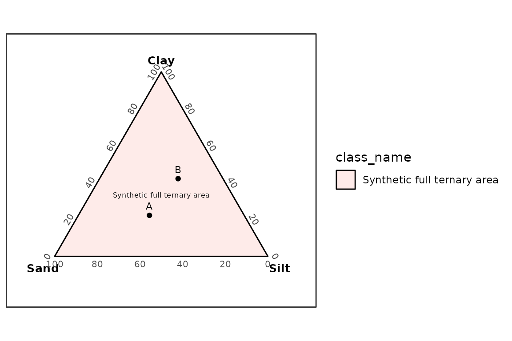

Overview
Particle-size fraction schemes define boundaries such as clay, silt, sand, and gravel limits. Texture class polygons define regions in a ternary diagram. The two are related, but they are not the same data object.
grainsizeR includes particle-size fraction schemes and a framework for user-supplied texture polygons. Official built-in polygon datasets are not included yet because they need to be compiled from original official or academic sources with citations.
library(grainsizeR)
texture_polygon_sources()
#> # A tibble: 11 × 9
#> scheme scheme_name particle_size_system left_component right_component
#> <chr> <chr> <chr> <chr> <chr>
#> 1 usda USDA textur… usda sand silt
#> 2 hypres HYPRES text… hypres sand silt
#> 3 isss Internation… isss sand silt
#> 4 uk_ssew UK SSEW tex… uk_ssew sand silt
#> 5 gradistat GRADISTAT t… gradistat sand silt
#> 6 australia_20 Australia 2… australia_20 sand silt
#> 7 germany_63 Germany 63 … germany_63 sand silt
#> 8 canada_50 Canada 50 u… canada_50 sand silt
#> 9 belgium_50 Belgium 50 … belgium_50 sand silt
#> 10 fr_aisne French Aisn… fr_aisne sand silt
#> 11 fr_geppa French GEPP… fr_geppa sand silt
#> # ℹ 4 more variables: top_component <chr>, polygon_status <chr>,
#> # primary_source <chr>, notes <chr>USDA 12-class major texture ternary classification is available
without a bundled polygon dataset by using the validated internal rule
path through classify_texture().
samples <- data.frame(
sample_id = c("A", "B", "C"),
sand = c(90, 40, 20),
silt = c(5, 40, 20),
clay = c(5, 20, 60)
)
classify_texture(samples, scheme = "usda", method = "rules")
#> # A tibble: 3 × 11
#> sample_id sand silt clay texture_class_id texture_class
#> <chr> <dbl> <dbl> <dbl> <chr> <chr>
#> 1 A 90 5 5 sand sand
#> 2 B 40 40 20 loam loam
#> 3 C 20 20 60 clay clay
#> # ℹ 5 more variables: classification_method <chr>, rule_status <chr>,
#> # all_rule_matches <chr>, rule_conflict <lgl>, rule_gap <lgl>This USDA rule path covers only the 12 major classes and does not include sand-size modifier subclasses. User-supplied polygon classification remains the generic workflow for other texture systems.
Creating a Polygon Data Frame
texture_polygon_template() shows the required columns.
The synthetic example below defines a single class covering the full
ternary triangle. It is not an official texture classification
system.
texture_polygon_template()
#> # A tibble: 0 × 12
#> # ℹ 12 variables: scheme <chr>, class_id <chr>, class_name <chr>,
#> # vertex_id <int>, left <dbl>, right <dbl>, top <dbl>, left_component <chr>,
#> # right_component <chr>, top_component <chr>, reference_id <chr>,
#> # reference <chr>
polygons <- data.frame(
scheme = "synthetic_ternary",
class_id = "all",
class_name = "Synthetic full ternary area",
vertex_id = 1:3,
left = c(100, 0, 0),
right = c(0, 100, 0),
top = c(0, 0, 100),
left_component = "sand",
right_component = "silt",
top_component = "clay",
reference_id = NA_character_,
reference = NA_character_
)
polygons <- validate_texture_polygons(polygons)
polygons
#> # A tibble: 3 × 12
#> scheme class_id class_name vertex_id left right top left_component
#> <chr> <chr> <chr> <dbl> <dbl> <dbl> <dbl> <chr>
#> 1 synthetic_tern… all Synthetic… 1 100 0 0 sand
#> 2 synthetic_tern… all Synthetic… 2 0 100 0 sand
#> 3 synthetic_tern… all Synthetic… 3 0 0 100 sand
#> # ℹ 4 more variables: right_component <chr>, top_component <chr>,
#> # reference_id <chr>, reference <chr>Classifying Samples
This synthetic grain-size table has finite boundaries at the USDA-style sand, silt, and clay thresholds used by the example polygon axes.
synthetic <- data.frame(
sample_id = rep(c("A", "B"), each = 4),
size_mm = rep(c(2, 0.05, 0.002, 0.001), 2),
retained = c(10, 40, 30, 20, 5, 20, 35, 40)
)
synthetic_gs <- as_gsd_tbl(
synthetic,
sample_id,
size_mm,
retained,
value_type = "percent"
)
classify_texture(
synthetic_gs,
polygons = polygons,
scheme = "synthetic_ternary"
)
#> # A tibble: 2 × 13
#> sample_id scheme texture_class_id texture_class left right top x y
#> <chr> <chr> <chr> <chr> <dbl> <dbl> <dbl> <dbl> <dbl>
#> 1 A synthe… all Synthetic fu… 40 30 20 0.444 0.192
#> 2 B synthe… all Synthetic fu… 20 35 40 0.579 0.365
#> # ℹ 4 more variables: resolved <lgl>, ambiguous <lgl>, normalize <chr>,
#> # interpolation_scale <chr>Plotting User Polygons
plot_texture_ternary() can draw sample points and
user-supplied polygons. plot_texture_triangle() remains
available as a compatibility function name.
plot_texture_ternary(
synthetic_gs,
polygons = polygons,
scheme = "synthetic_ternary"
)